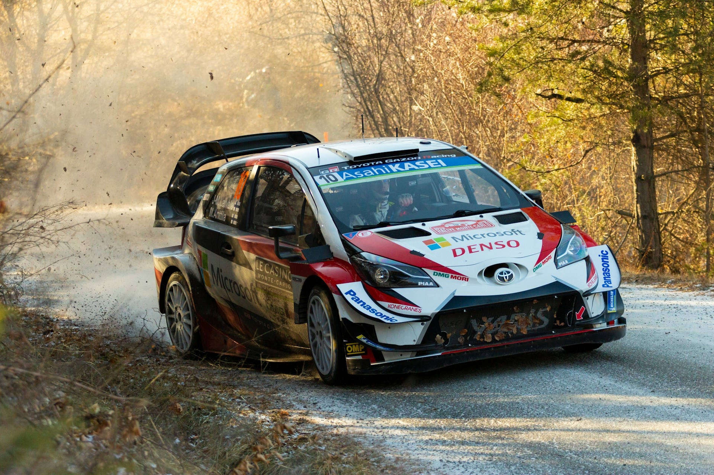

Welcome to Dust & Glory
Discover the world of rally racing, where history, engineering, courage, and speed come together. From legendary machines and unforgettable drivers to the latest competitions, we explore the past and present of rally motorsport.
What Is Rally Racing?
Rally racing is a motorsport in which drivers compete against the clock on challenging roads and different surfaces such as gravel, asphalt, snow, and dirt.
Unlike circuit racing, rally competitions take place across different routes known as special stages. A driver works alongside a co-driver who reads pace notes to describe upcoming turns, jumps, and hazards.

Explore the World of Rallying
Rally motorsport includes different competitions, each presenting unique challenges to drivers and their teams.
- World Rally Championship (WRC)International stage rally competition.
- European Rally Championship (ERC)A major international rally competition across Europe.
- Rally Raid:Long-distance competitions across challenging terrain.
- National Rally Championships:Competitions organized within individual countries.